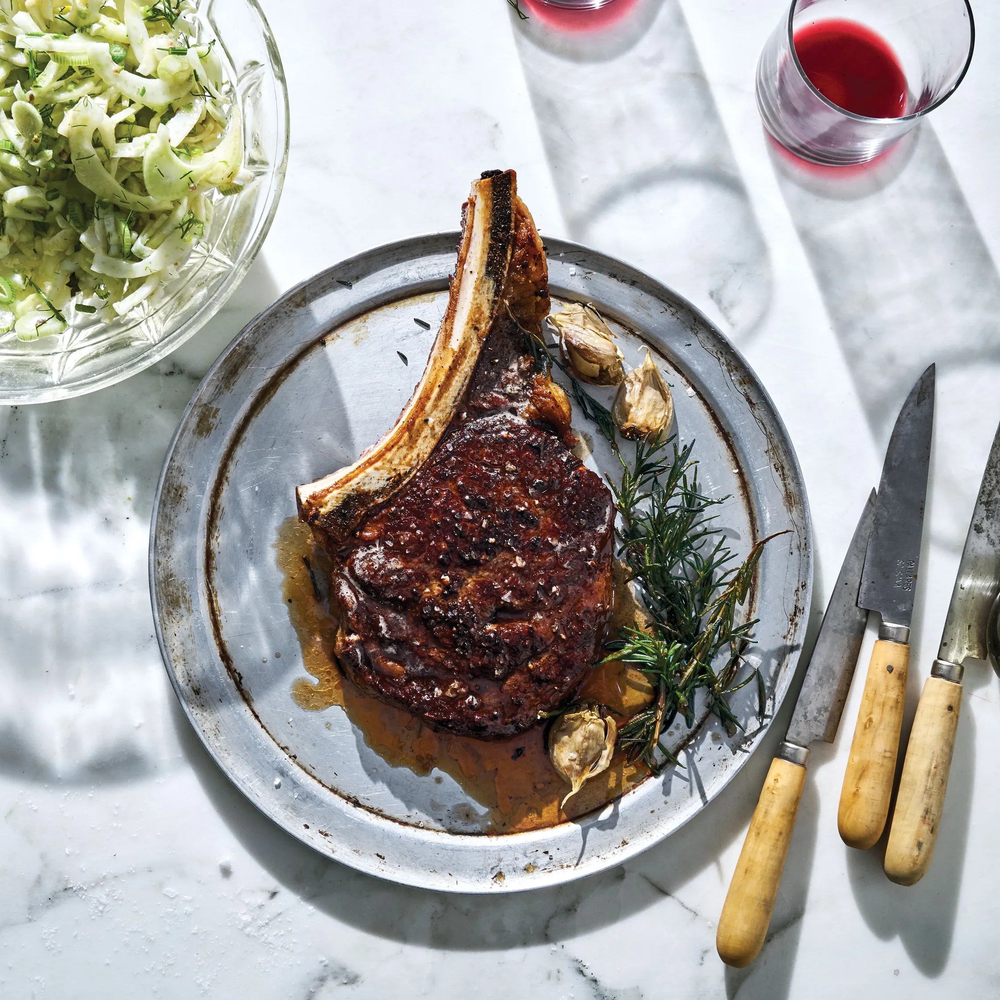

Butter-Basted Rib Eye with Crunchy Fennel Salad

Rich marbled meats are extra-delicious when served with cool,
crunchy, acidic vegetables. It's a fact, and the combo never gets old.
Bone-in strip steak or a T-bone are great choices here too.
Ingredients
3-4 Servings
- 2"-thick bone-in rib eye steak (about 2 lb.)
- Kosher salt
- freshly ground pepper
- 1/3 cup extra-virgin olive oil
- 3 Tbsp. unsalted butter
- 4 Gralic cloves, 3 mashed, 1 finely grated
- 2-3 sprigs rosemary
- oil-packed anchovy fillets,finely chopped
- 2 Tbsp. white wine vinegar
- 2 fennel bulbs, woody tops trimmed
- Aleppo-style pepper (for serving)
- Flaky sea salt
Preparation
- If you think of it in advance, season steak all over with kosher salt and pepper. Chill, uncovered, at least
2 hours and up to 2 days. If not, season now and proceed.
- Heat a medium cast-iron skillet over medium-high 2 minutes. Drizzle in enough oil to evenly coat pan
with no bald spots and cook steak, turning every 2–3 minutes, until a dark crust forms on both sides and
steak is very rare (a thermometer inserted dead center should register 115°), 12–15 minutes. Frequent
turning will develop a gorgeous crust without creating thick strips of well-cooked steak beneath the
surface.
- Reduce heat to medium; add butter, smashed garlic, and rosemary. Tilt skillet toward you and scoot
steak to the far end of pan so that garlic and rosemary slide down into the foaming butter. Holding the
skillet’s handle with your nondominant hand, spoon butter over steak repeatedly, 1–2 minutes (internal
temperature should hit 120° for medium-rare). Transfer steak to a platter and let rest 15 minutes for
juices to redistribute.
- Meanwhile, whisk together grated garlic, anchovies, and vinegar in a medium bowl; season with kosher
salt. Whisk in ⅓ cup oil, then taste and season with more kosher salt and some pepper. The dressing
should be punchy and acidic.
- Cut stalks away from fennel bulb. Remove tough outer layer from bulb, then halve lengthwise. Cut out
core. Set cut side down and slice crosswise ¼" thick, then slice stalks and fronds, which will give the
salad a range of textures. Add fennel to bowl with dressing and toss to coat.
- Cut steak away from bone and slice against the grain ½" thick. Season with some Aleppo-style pepper
and sea salt; drizzle with oil. Serve with fennel salad alongside and the bone, too, of course.